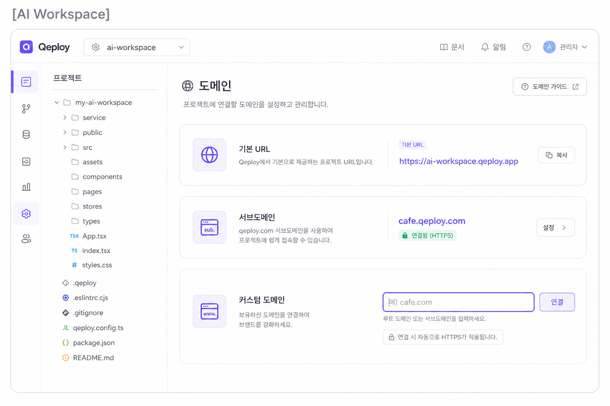
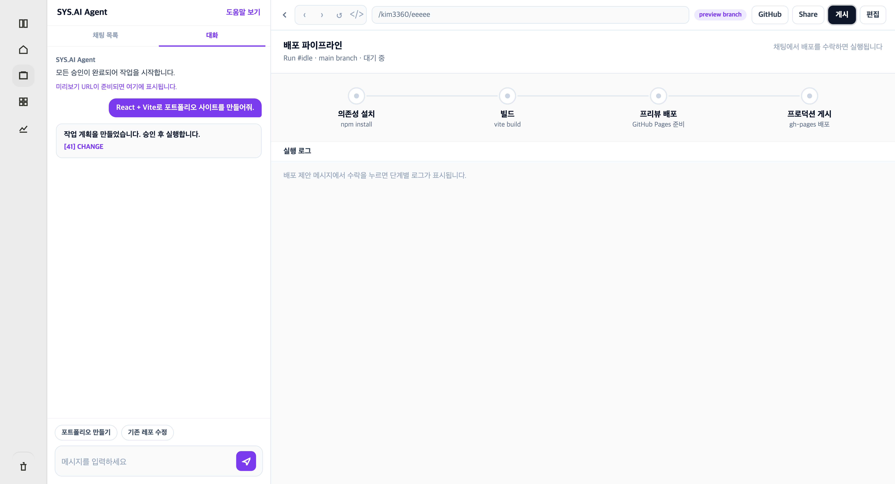

배포·도메인·인프라 반영 알고리즘은 Decision Agent가 넘긴 작업을 받아 배포인지부터 가른다. 배포가 아니면 도메인 연결이거나 인프라 쪽(재시작, 리소스, 환경변수, 비용)으로 보낸다. 정적 프론트엔드는 GitHub Pages로, 그 외는 연결된 AWS/GCP로 반영한다. 클라우드가 안 묶여 있으면 해당 설정을 비활성한다. 배포가 끝나면 Live와 버전(v1, v2…)을 Overview에 남기고 True를 반환한다. 실패하면 “실패했습니다”만 보여 주지 않고, 쉬운 설명과 로그 일부, 수정안 1개를 붙여 False를 반환한 뒤 재시도 승인을 받는다. 서브도메인(예: cafe.qeploy.com)은 사용자가 이름을 정하며 임의로 만들지 않는다. 이미 쓰이거나 쓸 수 없는 이름이면 승인창을 열지 않는다.
배포 · 도메인 · 인프라 반영 알고리즘에서 True 값을 반환할 때,

배포 · 도메인 · 인프라 반영 알고리즘에서 False 값을 반환할 때,
